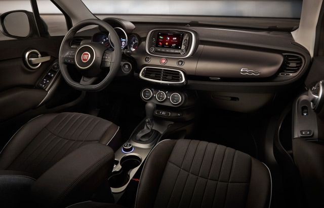
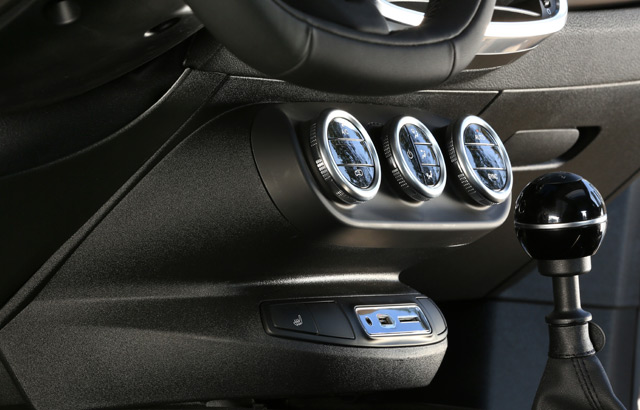

Lo más destacado del Nuevo Fiat
Para viajar con total comodidad, el asiento del conductor ofrece regulación en altura longitudinal, apoyo lumbar y respaldo reclinable.
Estas dos versiones muestran el alma más audaz y repleta de contenidos de 500X. Esta es la ecuación ideal para aquellos que buscan la apariencia fuerte y distinguida de un auténtico crossover, pero no renuncian a nada cuando la aventura se presenta
Se necesita talento para llamar la atención con elegancia por las calles de la ciudad. Las versiones con carácter metropolitano cuentan con la carrocería perfecta para hacerlo, gracias a una caracterización estética de los paragolpes en los que prima el color de la carrocería y los detalles cromados que destacan su belleza
500X es el crossover que fusiona estilo y esencia. Las dos almas, urban y cross, se adaptan a los gustos y necesidades de todos, brindando placer de conducción, tecnología y seguridad en lo más alto del segmento. En 500X, “Made in Italy“ se completa con la solidez de un vehículo confortable, con altas prestaciones y siempre conectado con el mundo.